◆『「主線分支 虛數大海戰」發佈記念Pick Up召喚』期間◆
期間:2022年10月26日(三) 17:00～11月4日(五) 11:59
舉辦從「主線分支 虛數大海戰 幻想急航 ～上浮吧鸚鵡螺號～」關聯的從者之中，包含期間限定從者「★5(SSR)梵谷」的4位從者Pick Up的2種召喚！
並且，在2020年「虛數大海戰Pick Up召喚(每日交替)」登場的3種期間限定概念禮裝Pick Up！
※就算未滿足主線分支的關卡開放條件狀態也能進行本召喚。
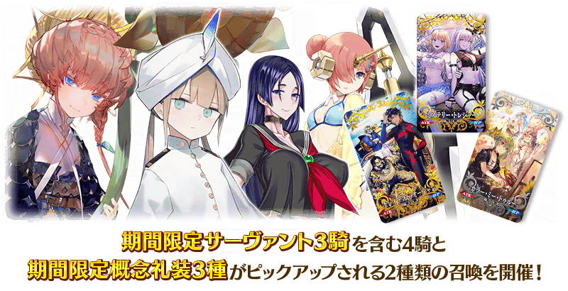
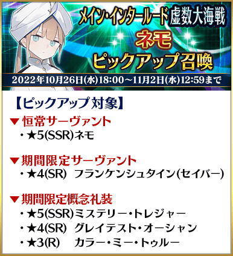
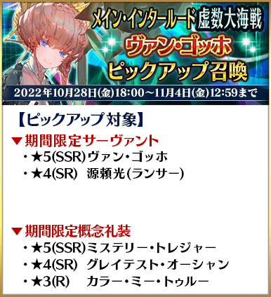
Pick Up期間中，Pick Up對象從者與概念禮裝的出現機率提升！
詳情請在聖晶石召喚畫面左下的召喚詳細確認。
11次召喚中確定1張★4(SR)以上和確定1位★3(R)以上的從者！ ※確定★4(SR)以上包含從者和概念禮裝。 ※本頁面皆為開發中圖片。會有與實際圖片相異的情況。
◆『「主線分支 虛數大海戰」發佈記念Pick Up召喚』時間表◆
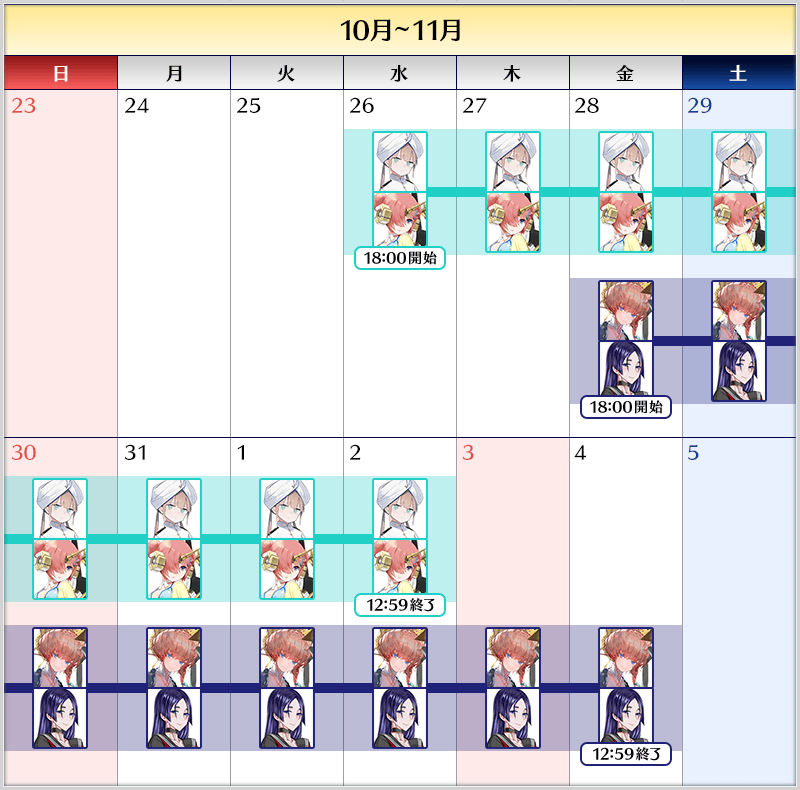
※請注意各召喚中獎勵召喚的計算是各自分別計算。 ※請注意各自的Pick Up召喚舉辦期間不同。 ※本召喚中，只有在各召喚Pick Up的從者才是透過「確定召喚」召喚的對象。
◆『「主線分支 虛數大海戰」發佈記念Pick Up召喚』的注意◆
本次的召喚是每個召喚內容做為個別召喚舉辦的設定。
每10次召喚進行的「＋1次獎勵召喚」與用有償聖晶石進行的1天1次限定「1次召喚」會變成每個召喚內容分別計算。
【重要】
◆關於「確定召喚」功能◆
・期間限定Pick Up召喚中，在329次以內未召喚到Pick Up對象★5(SSR)從者情況，只限1次可在進行第330次的召喚時「確定召喚」必定1位Pick Up對象★5(SSR)從者。
・在同時間舉辦多個期間限定Pick Up召喚的情況，各召喚分別(每個召喚畫面頁面)計算召喚次數。另外，以每日交替Pick Up召喚的內容切換情況，各自分別計算召喚次數。舉例，每天23:00時間點變更召喚內容的Pick Up召喚情況，請注意在召喚內容變更的時間點會重置召喚次數的計算。
・請注意期間限定Pick Up召喚中滿足以下任何條件的話，在召喚畫面會顯示「Pick Up對象確定召喚已結束。(ピックアップ対象の確定召喚は終了しました。)」，該召喚中「確定召喚」功能變成無效。
・第329次前召喚到Pick Up對象★5(SSR)從者
・在第330次確定召喚到Pick Up對象★5(SSR)從者
・召喚次數在期間限定Pick Up召喚中用有償聖晶石、無償聖晶石、呼符進行召喚時都會計算。目前的召喚履歴可於該召喚畫面內確認。
※每10次召喚進行的「＋1次獎勵召喚」與用有償聖晶石進行的1天1次限定「1次召喚」也在計算的對象。
※每個召喚內容會分開計算「＋1次獎勵召喚」與1日1次限定的「1次召喚」。請注意在變更召喚內容那天的23:00，「＋1次獎勵召喚」和「1次召喚」的計算會被重置。
※透過有償聖晶石1個「1次召喚」的計算，也會在每天3:00重置。
・在進行11次召喚時滿足「確定召喚」功能條件的情況，在施行11次召喚中會確定召喚1位Pick Up對象★5(SSR)從者。屆時，11次召喚中保障的確定1張★4(SR)以上與確定1位★3(R)以上的從者會另外生效。
・期間限定Pick Up召喚結束後，無法繼承召喚次數到別的召喚。
・故事召喚、友情點數召喚為「確定召喚」功能的對象外。
◆關於1天1次限定的有償聖晶石召喚◆
※可以1天1次限定於期間限定召喚用有償聖晶石1個進行「1次召喚」。
※透過有償聖晶石1個的「1次召喚」，每天3:00重置。
※透過有償聖晶石1個的「1次召喚」對應的聖晶石召喚有好幾個的情況，各個召喚中1天各進行1次有償聖晶石1個的「1次召喚」。
※請注意就算進行透過有償聖晶石1個的「1次召喚」，不包含在1次獎勵的計算。
※聖晶石購入時賦予的「附贈(オマケ)」是做為無償聖晶石而不包含在有償聖晶石的個數，請注意別搞錯。另外，持有聖晶石的細項，可從持有道具一覧確認。
◆關於透過召喚獲得從者硬幣◆
在期間限定召喚、故事召喚、友情點數召喚中入手從者時，可獲得該從者的從者硬幣。
◆有關從者的注意◆
※請注意自2022年11月2日(三) 12:00追加到故事召喚的下述從者在本召喚中為抽出對象外。
・★4(SR)黃飛虎
※請注意下述的從者只會從成為Pick Up對象的召喚被抽出。
・★5(SSR)梵谷
・★4(SR)弗蘭肯斯坦(Saber)
・★4(SR)源賴光(Lancer)
※下述的從者在Pick Up期間結束後不會追加到故事召喚。
・★5(SSR)梵谷
・★4(SR)弗蘭肯斯坦(Saber)
・★4(SR)源賴光(Lancer)
※下述的從者在Pick Up期間結束後仍會在故事召喚被抽出。
・★5(SSR)尼莫
◆有關概念禮裝的注意◆
※下述的概念禮裝，Pick Up期間中也能靠友情點數召喚獲得。
・★3(R)カラー・ミー・トゥルー
※在自動變還設定登錄★3(R)概念禮裝的情況，下述的概念禮裝會變成自動變還的對象。
・★3(R)カラー・ミー・トゥルー
期間限定從者
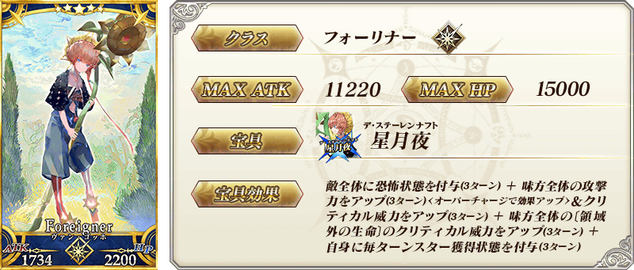
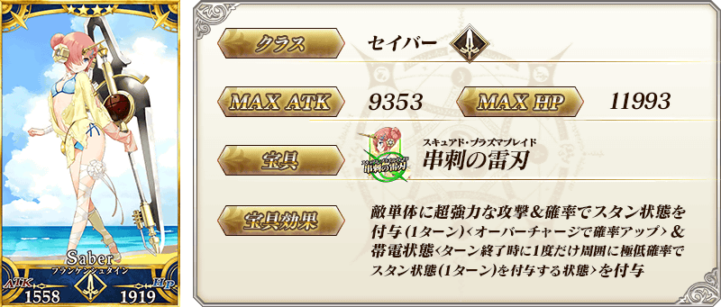
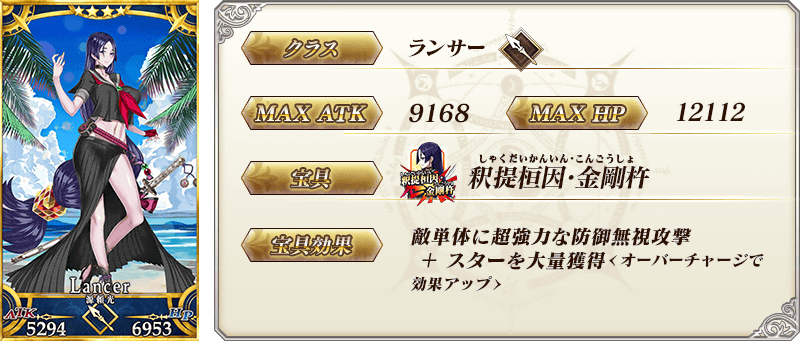 ※上述「★4(SR)源賴光(Lancer)」的卡面為靈基再臨第1階段。
常駐從者


期間限定概念禮裝
| 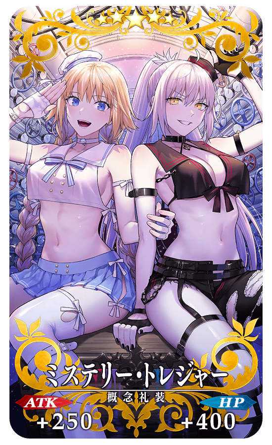 |
★★★★★SSR
◆最大解放時效果◆ |
| 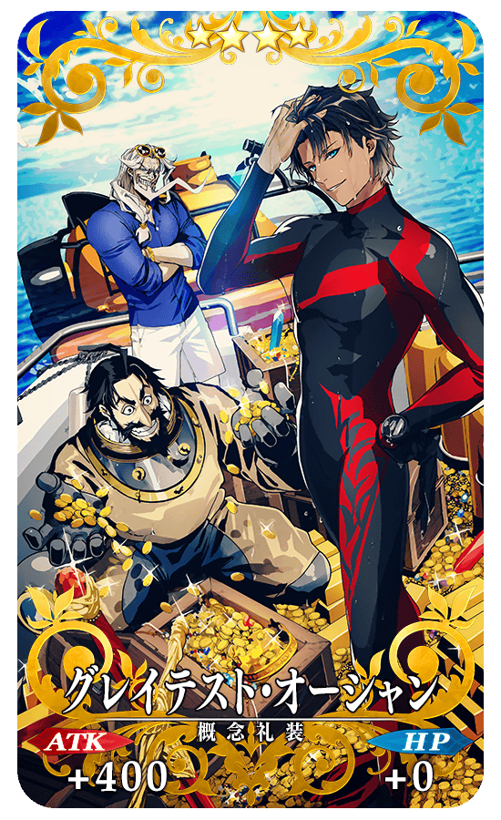 |
★★★★SR
◆最大解放時效果◆ |
| 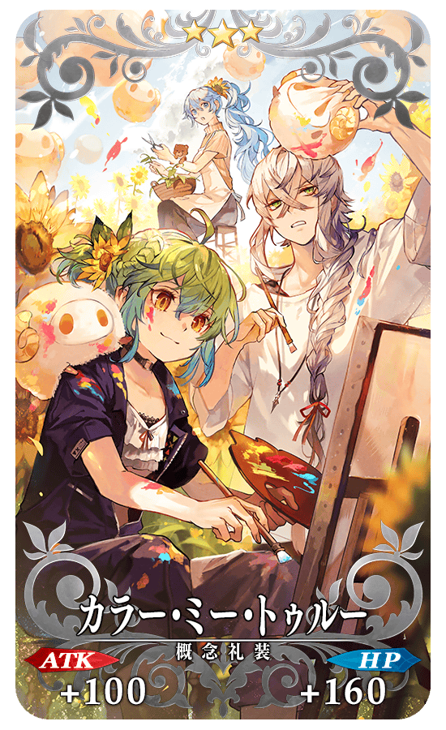 |
★★★R
◆最大解放時效果◆ |
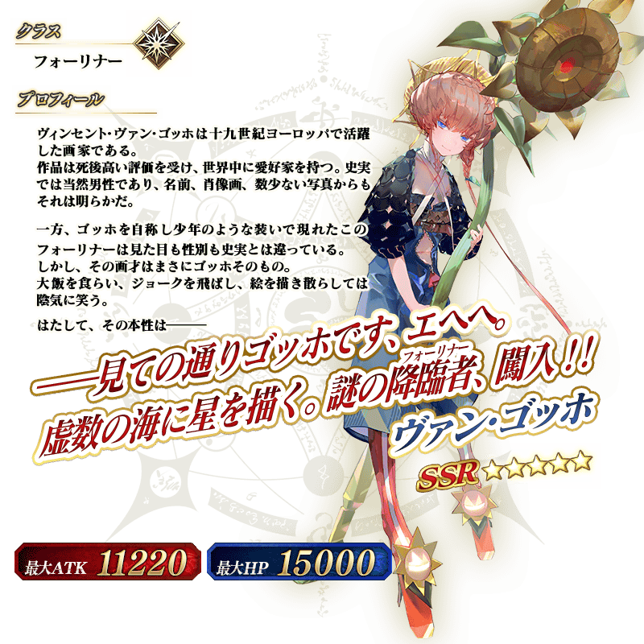
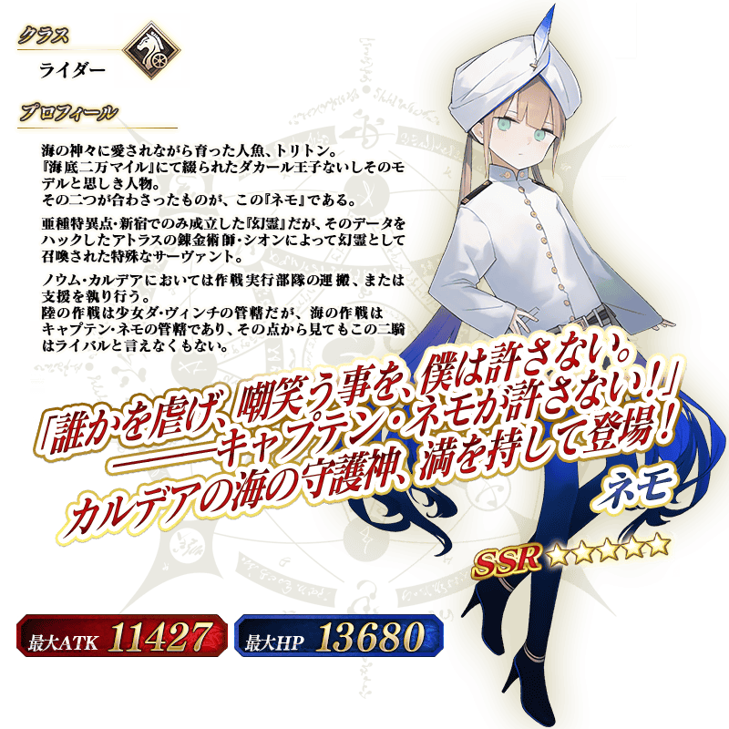
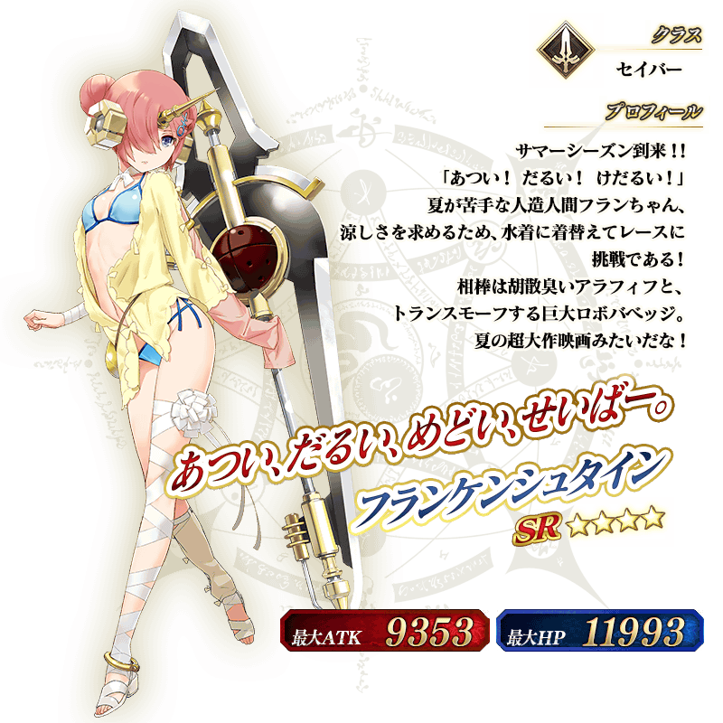
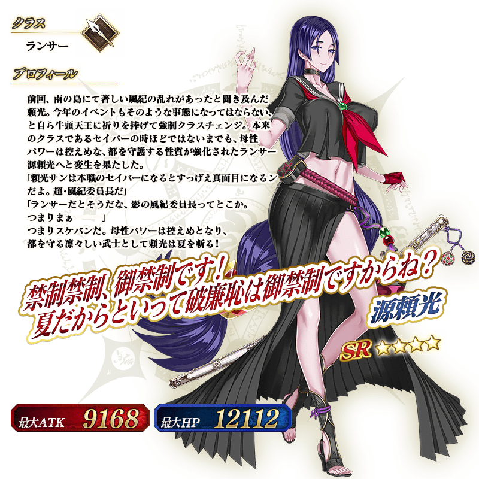 ※上述「★4(SR)源賴光(Lancer)」的立繪為靈基再臨第1階段。
【10月28日(五) 17:00追記】
「★5(SSR)梵谷」的新「幕間物語」，在迦勒底之門永久追加。
能入手聖晶石做為關卡通過報酬。
另外，11月4日(五) 11:59為止的期間中，就算未持有「★5(SSR)梵谷」也能開放「幕間物語」！
由於開放條件也變成期間限定的特別開放條件，務必藉此機會通過「★5(SSR)梵谷」的「幕間物語」吧！
※超過『「主線分支 虛數大海戰 幻想急航 ～上浮吧鸚鵡螺號～」發佈記念宣傳活動』期間限定開放期間的情況，「★5(SSR)梵谷」的「幕間物語」開放條件會切換成平常的開放條件。
※關卡通過時的報酬內容沒有變化。
◆追加時間◆
2022年10月28日(五) 17:00～
◆期間限定開放期間◆
2022年10月28日(五) 17:00～11月4日(五) 11:59
|
◆期間限定開放條件◆
◆平常開放條件◆ ◆關卡通過報酬◆ |
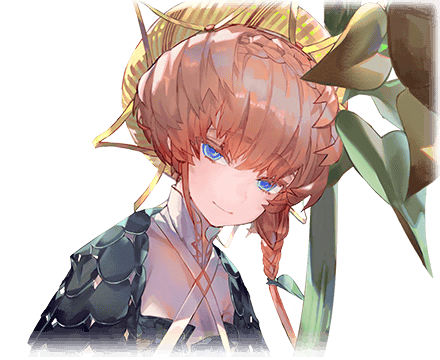 |
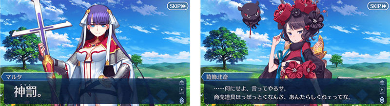
◆「幕間物語」平常開放的注意◆
※未持有「★5(SSR)梵谷」的情況，關卡不會出現。
※關卡沒有舉辦期限。
※在期間限定開放期間中，已經通過「★5(SSR)梵谷」幕間物語的情況，無法再度遊玩。
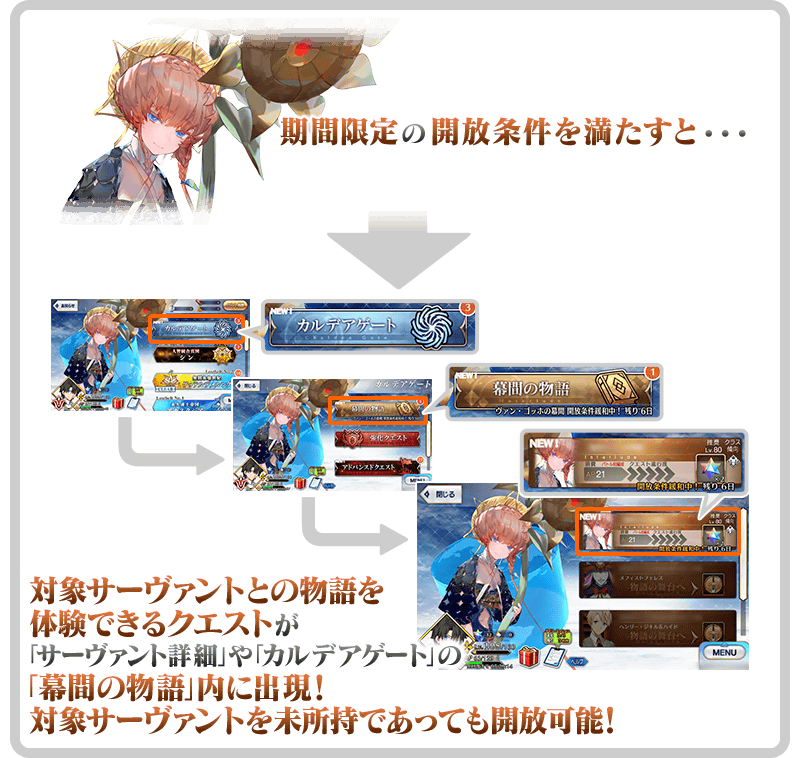
介紹在本召喚Pick Up的4位從者寶具演出！
【★5(SSR)梵谷】
【★5(SSR)尼莫】
【★4(SR)弗蘭肯斯坦(Saber)】
【★4(SR)源賴光(Lancer)】
其他還有，『「主線分支 虛數大海戰 幻想急航 ～上浮吧鸚鵡螺號～」發佈記念宣傳活動』以期間限定同時舉辦！
關於詳情，請自下述橫幅確認。
■「主線分支 虛數大海戰 幻想急航 ～上浮吧鸚鵡螺號～」發佈記念宣傳活動詳細情報